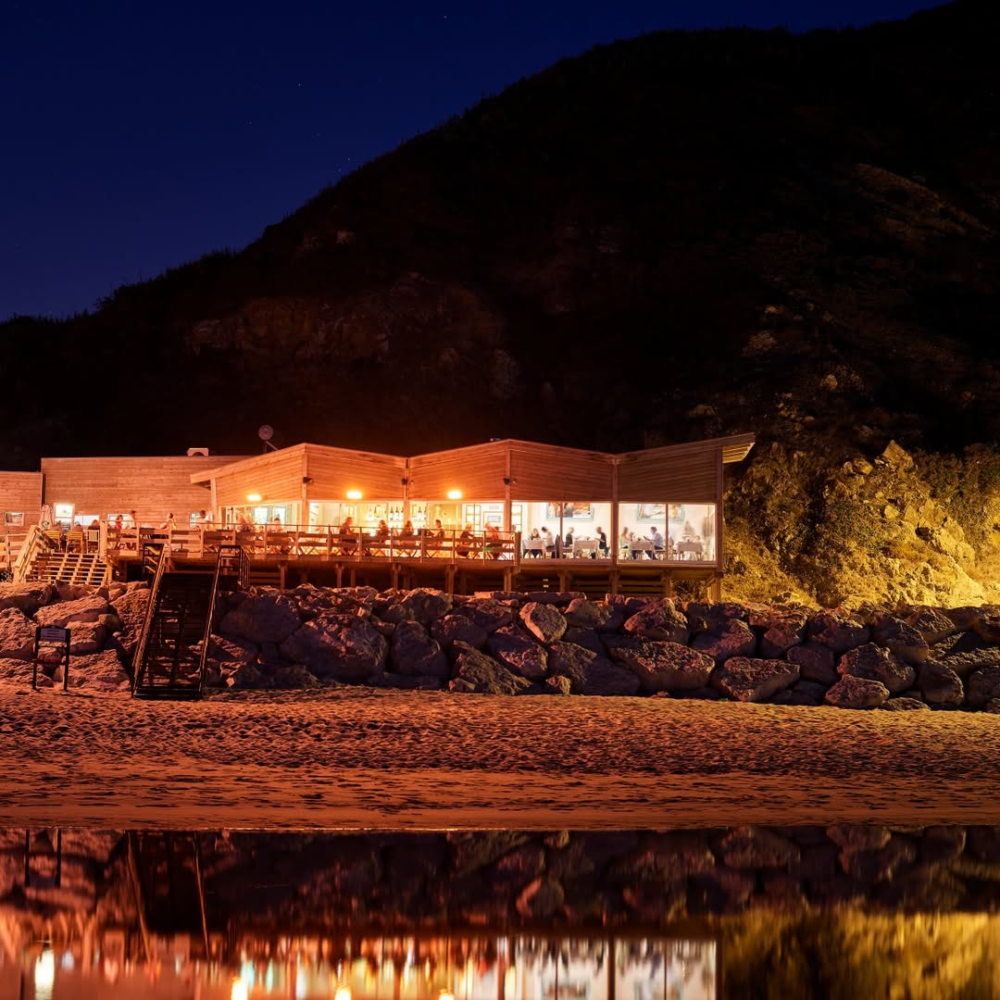

Bar do Fundo
Início
História
Galeria
O Menu
PT
EN
Reservar
Praia Grande · Sintra
Onde o Mar
se encontra com a Mesa
A Nossa Herança
Uma História de Mar e Sal

Galeria
Fragmentos do Atlântico
O Menu
Sinfonia de Sabores